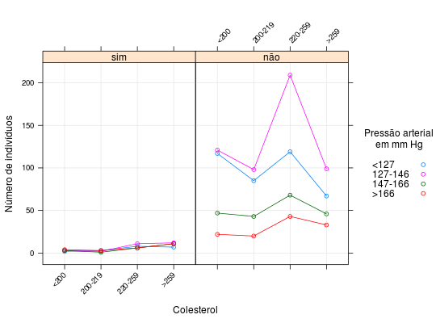

Os dados são referentes à classificação de 1330 pacientes segundo três fatores: ocorrência de doença das coronárias, nível de colesterol e pressão arterial. O interesse é analisar a associação entre essas variáveis.
Um data.frame com 32 observações e 4 variáveis.
doencasim) ou não ocorrência (não) de doença das
coronárias.colest<200, 200-219,
220-259 e >259.pa<127, 127-146,
147-166 e >166.ninddoenca, colest e
pa.PAULA (2004), Tabela 4.14, pág. 334.
Everitt, B. S. (1977). The Analysis of Contingency Tables. Chapman anda Hall, London.
data(PaulaTb4.14)#> Warning: data set ‘PaulaTb4.14’ not foundstr(PaulaTb4.14)#> 'data.frame': 32 obs. of 4 variables: #> $ doenca: Factor w/ 2 levels "sim","não": 1 1 1 1 1 1 1 1 1 1 ... #> $ colest: Factor w/ 4 levels "<200","200-219",..: 1 1 1 1 2 2 2 2 3 3 ... #> $ pa : Factor w/ 4 levels "<127","127-146",..: 1 2 3 4 1 2 3 4 1 2 ... #> $ nind : int 2 3 3 4 3 2 1 3 8 11 ...xt <- xtabs(nind ~ ., data = PaulaTb4.14) ftable(xt)#> pa <127 127-146 147-166 >166 #> doenca colest #> sim <200 2 3 3 4 #> 200-219 3 2 1 3 #> 220-259 8 11 6 6 #> >259 7 12 11 11 #> não <200 117 121 47 22 #> 200-219 85 98 43 20 #> 220-259 119 209 68 43 #> >259 67 99 46 33plot(xt)library(lattice) xyplot(nind ~ colest | doenca, groups = pa, data = PaulaTb4.14, type = c("p", "a", "g"), xlab = 'Colesterol', ylab = 'Número de indivíduos', scales = list(x = list(rot = 45)), auto.key = list( space = "right", cex.title = 1, title = "Pressão arterial\nem mm Hg"))